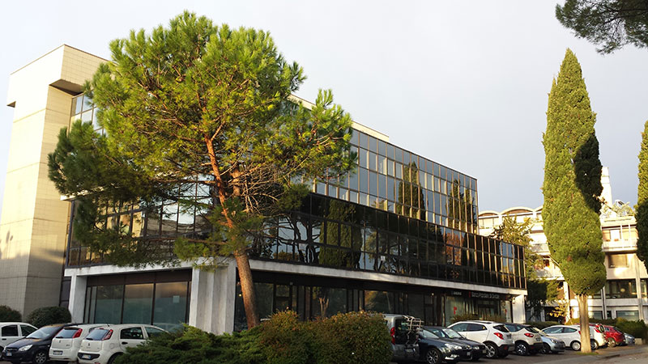
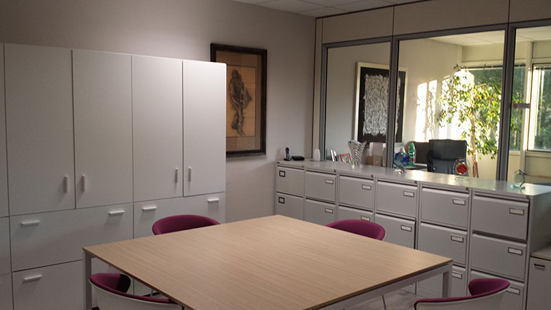

Azienda


Chi Siamo
Un'azienda costruita sulle relazioni
Temmes nasce nei primi anni 2000 con un obiettivo preciso: facilitare gli scambi commerciali tra i mercati dell'Europa orientale e occidentale. In un periodo in cui queste due realtà stavano avvicinandosi, abbiamo costruito le prime reti di contatto con produttori e acquirenti, imparando le specificità di ogni mercato sul campo.
Nel corso degli anni abbiamo ampliato la nostra presenza nei settori alimentare, chimico e delle materie prime industriali. Oggi operiamo in oltre venti paesi, con un approccio che unisce esperienza commerciale, conoscenza tecnica e una rete di relazioni consolidata nel tempo.
La nostra forza non è la dimensione, ma la profondità delle relazioni che abbiamo costruito.